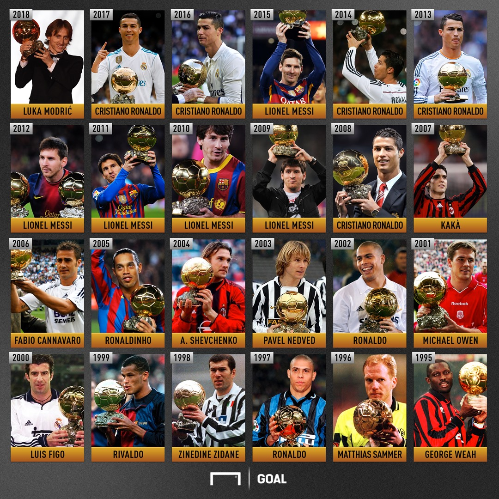
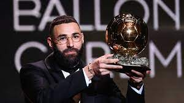
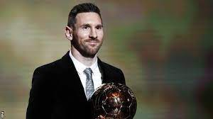
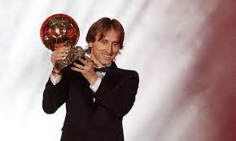
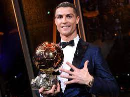
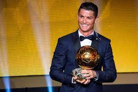
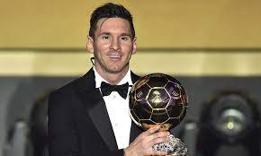
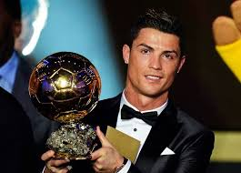
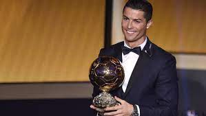
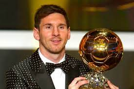

History Of The Last 10 Ballon D'or Winners
This image include the last 10 ballon d'or winners.
Table of Contents
History
The Ballon d'Or is one of the most prestigious individual awards in the world of football, presented annually by France Football. It recognizes the best male footballer in the world. Here's a look at the winners from the past ten years:
2022 Ballon D'or Winner Karim Benzema
Real Madrid and France striker Karim Benzema has been named the winner of the 2021 Ballon d'Or, ending Lionel Messi and Cristiano Ronaldo's 11-year dominance of the award.
2021 Ballon D'or Winner Lionel Messi

Lionel Messi won the award for a record-extending seventh time after captaining Argentina to the 2021 Copa America, its first senior international title since 1993.
2019 Ballon D'or Winner Lionel Messi
Lionel Messi won the award for a record-extending sixth time after scoring 54 goals for club and country in 2018-19, in which he won La Liga with Barcelona.
2018 Ballon D'or Winner Luka Modric
Luka Modric won the award after helping Real Madrid to a third successive Champions League title and captaining Croatia to second place at the 2018 World Cup.
2017 Ballon D'or Winner Cristiano Ronaldo
Cristiano Ronaldo won the award for a fifth time after helping Real Madrid to a second successive Champions League title and finishing top scorer in the competition.
2016 Ballon D'or Winner Cristiano Ronaldo
Cristiano Ronaldo won the award for a fourth time after winning the Champions League with Real Madrid and Euro 2016 with Portugal.
2015 Ballon D'or Winner Lionel Messi
Lionel Messi won the award for a fifth time after helping Barcelona to the treble of La Liga, the Copa del Rey and the Champions League.
2014 Ballon D'or Winner Cristiano Ronaldo
Cristiano Ronaldo won the award for a third time after helping Real Madrid to the Champions League and winning the Copa del Rey.
2013 Ballon D'or Winner Cristiano Ronaldo
Cristiano Ronaldo won the award for a second time after scoring 66 goals in 56 appearances for Real Madrid and Portugal in 2013.
2012 Ballon D'or Winner Lionel Messi
Lionel Messi won the award for a fourth time after scoring 91 goals in 69 appearances for Barcelona and Argentina in 2012.
Talking About The Voting System For The Last 10 Ballon D'or
The Ballon d'Or is voted for by 180 journalists from around the world, with one representative per nation. Each journalist votes for their top five players, with the first receiving six points, the second four points, the third three points, the fourth two points and the fifth one point.
Votes For The Past 10 Ballon D'or Winners
| Year | Winner | Club | Country | Votes |
|---|---|---|---|---|
| 2022 | Karim Benzema | Real Madrid | France | 549 |
| 2021 | Lionel Messi | Barcelona | Argentina | 613 |
| 2019 | Lionel Messi | Barcelona | Argentina | 686 |
| 2018 | Luka Modric | Real Madrid | Croatia | 753 |
| 2017 | Cristiano Ronaldo | Real Madrid | Portugal | 946 |
| 2016 | Cristiano Ronaldo | Real Madrid | Portugal | 745 |
| 2015 | Lionel Messi | Barcelona | Argentina | 512 |
| 2014 | Cristiano Ronaldo | Real Madrid | Portugal | 723 |
| 2013 | Cristiano Ronaldo | Real Madrid | Portugal | 1,365 |
| 2012 | Lionel Messi | Barcelona | Argentina | 1,176 |
Voting Time
Who was your favourite ballon d'or winner in the last 10 years?